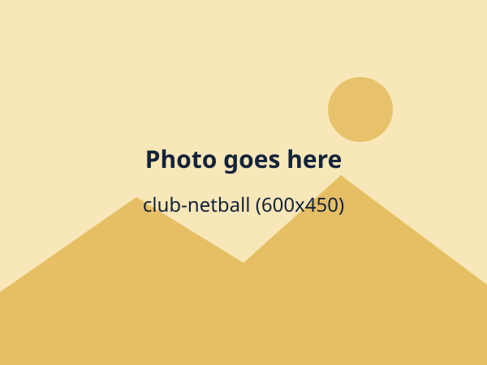
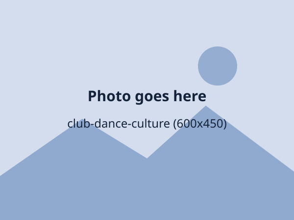
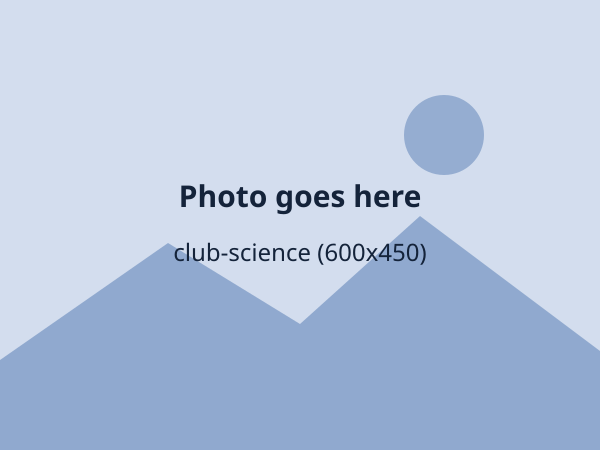
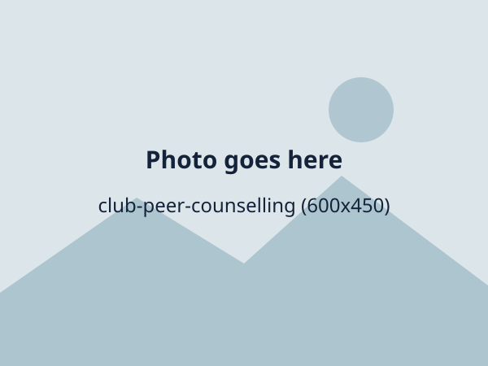
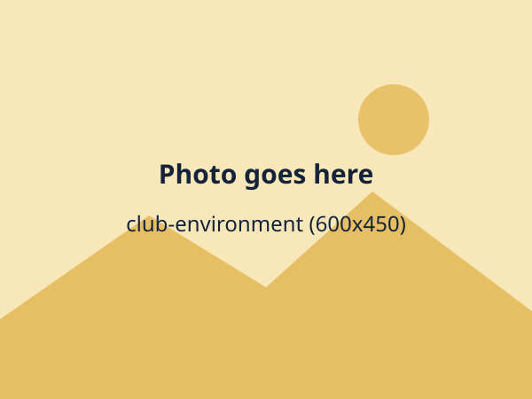
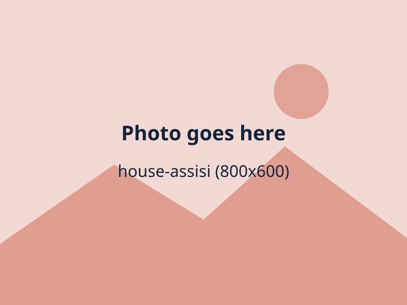
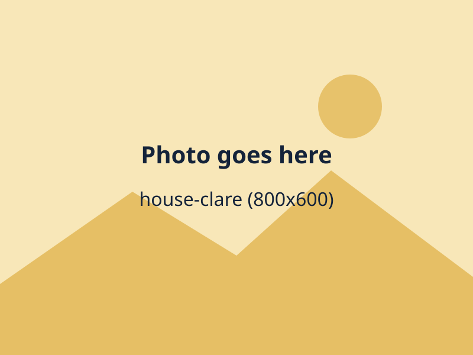
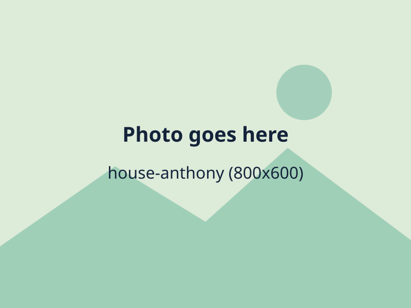

6:00
Boarders wake up
Beds made, a quick wash and a calm start in the dormitory.
Boys' and girls' teams for every level.

Training twice a week and inter-school matches.
Courts open at games time every day.
Track and field, with inter-house trials each term.
Choir, band and a music festival each year.
A school play every year and drama festival entries.

Traditional and modern dance for school events.
Drawing, painting and design for the art exhibition.
Weekly practice and inter-school competitions.

Experiments, projects and the yearly science fair.
Build programs and robots in the computer lab.
Think ahead, play fair, shake hands.
The school newsletter, radio and photography.

Trained students who listen and support others.

Tree planting, recycling and clean-up days.
Students bring ideas to the head teacher.
Keep scrolling to follow a day from early morning to evening prep.
Swipe sideways, or use the buttons, to follow a day from early morning to evening prep.
6:00
Beds made, a quick wash and a calm start in the dormitory.
7:30
Day scholars and boarders meet for a prayer or reflection, notices and prefect announcements.
8:00
Mathematics, English and the sciences with teachers who know your name.
10:30
Tea and snacks, a quick game or a chat under the trees.
13:00
Hot meals cooked on site in the dining hall.
14:00
Practicals in the science labs, research in the library or a session in the computer lab.
16:00
Football, netball, debate, music, coding or drama. Day scholars head home at 17:00.
19:30
Boarders study in supervised prep, then supper and lights out.
Every class has timetabled time in both spaces each week, and both are open for private study after lessons.
Textbooks, novels, newspapers and past papers, with a reading challenge every term and library prefects to help.
ICT lessons, typing practice, research and coding club, with trained staff on hand.
Biology, chemistry and physics practicals, so students learn by doing, not just by reading.
A safe, friendly second home for students who board, with the same teachers, clubs and care.
Supervised by wardens and matrons, with clean washrooms and a quiet study corner.
Supervised study every evening, with teachers on duty to help with homework.
Games, movie nights, worship and visiting days when families can come and see their children.
Work hard, celebrate well. Students plan these events with their teachers and house leaders.
An evening of dinner, dancing and awards to say goodbye to S.4 and S.6.
A welcome party for new S.1 and S.5 students, hosted by their houses.
Music, dance, comedy and poetry on stage, with every house cheering for its own.
Uganda Museum. A day in Kampala exploring the museum and the city.
Jinja and the Source of the Nile. A day trip with a boat ride and a geography field lesson.
Entebbe Botanical Gardens. A biology field trip, with sketching and plant study.
University and career visits. Campus tours, a careers fair and talks with graduates.
Balanced meals cooked on site. Boarders eat all three meals here. Pick a day to see a sample.
We cater for allergies and dietary needs. Tell us when you register.
Tap a photo to see it bigger, then swipe or use the arrow keys to see the rest.
Every student belongs to one of four houses, for sports, quizzes, music and prom nights.

Green house. Known for sport and loud cheering.

Blue house. Quiz champions, calm under pressure.

Red house. Strong in music and drama.
Gold house. Builders, debaters and organisers.